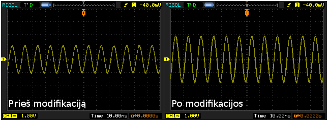

Rigol DS1052E
Įrašyta 2010-03-20, 12:48 | 19 Komentarų
Šios savaitės pradžioje atkeliavo mano išsvajotasis osciloskopas - Rigol DS1052E. Apie osciloskopo pirkimą galvojau jau gan seniai, bet vis pritrūkdavau lėšų. Galiausiai pasipildžius biudžetui, užsisakiau šį prietaisą iš DealExtreme.
Rigol skopai yra tikrų tikriausias gėris. Už tokią kainą rasti kažką geriau turbūt neįmanoma. Juolab, kad neseniai išaiškėjo, kad galima lengvai konvertuoti šį 50MHz modelį į 100MHz. Žemiau matosi įrodymas. Jei žinot, kas yra frequency response - suprasit.

Tas pats 100MHz signalas prieš ir po modifikacijos.
P.S. jei dar nesekat EEVBlog - labai rekomenduoju :)
Gairės: Elektronika, Osciloskopas, Wishlist
19 Komentarų
1. Dalius
2010-03-20, 13:19Sorry, už kvailą klausimą. O kam tau jis? Ką jis gali padaryti ko negalima padaryti su kompiuteriu?
2. Socrates
2010-03-20, 13:24Daliau -> pamatuok su kompu kokia itampa rozeteje ;) Vpp, RMS ir pan :))
Armandai -> kiek kainavo incl. shipping, visi draudimai, mokesciai ir t.t.?
3. xoom
2010-03-20, 13:29as jau kokia savaite irc visus uzknisu del skopo :) ir ziuriu i sita .. :) ir va bimt ir nusipirkai tu :)) tai as labai labai susidomejes situo :) ziurejau ir eevblog :) ir man idomu kiek viskas sukainavo isvis :) jei gali i email parasyk nes dar labiau uzsinorejau pirkt sita geri :))
4. Armandas
2010-03-20, 13:54Daliau, ne kvailas tas klausimas ;) Kompas nėra skirtas elektros signalų stebėjimui. Osciloskopas yra labai universalus matavimo prietaisas. Jis rodo signalų formas, įtampą, dažnį, gali atlikti matematinius veiksmus (pvz. FFT) ir t.t.
Šie dalykai yra reikalingi debuginant hardware'ą, ar šiaip atliekant matavimus ir renkant rezultatus.
Socrates, xoom, už viską (prekė + EMS siuntimas) sumokėjau apie 280 svarų. Šiek tiek nustebau, kad nereikėjo mokėti muitų. DE osciloskopo kainą deklaravo kaip $150 :)
5. Dalius
2010-03-21, 13:57Aš matau sinusoidę, matau FFT ir man asosiacija su garsu ir visai pamiršau, kad bangos būna ne tik garso. Ačiū už atsakymą.
6. aurelijus
2010-03-21, 20:35Sveikas pries menesi radau tavo blog, o radau savel brain bloge seku jy jau senai o dabar ir tavo ziuriu beto dekui uz eeblog ;) norejau paklausti kokius dar seki blogus be tu kuriuos anksciau isvardinai ;) dekui
7. Armandas
2010-03-22, 11:57Labas, šiaip esu užsiprenumeravęs apie 100 įvairių blogų, tai nežinau ar yra prasmė viską vardinti. Galėčiau paexportinti sąrašą, arba, gali sekti ką share'inu: http://www.google.com/reader/shared/jarusauskas
8. Laidukas
2010-04-17, 20:25Sveiki :) ir aš jau esu užsakęs šį oscilografą iš DX. Tikiuosi dėl Islandijos ugnikalnio ir skrydžių nebuvimo labai nevėluos jo atgabenimas.
9. Armandas
2010-04-18, 11:25Jėga :)
10. Andrius
2010-06-26, 00:26Uzsakiau ir as sita daikta is DX geguzes 16 diena, bet iki siol jie nesugebejo jo issiusti... nors kelis katus jau zadejo kad tuoj tuoj issius... dabar aiskinsiuosi su jais per paypal...
11. sala
2010-08-24, 11:31Hmm, bet ar verta siustis tik is DX, bo siustis ir Rigolo (oficiali kaina panasi - 399 baksai )atstovu gaunasi panasiai ar net pigiau (pvz : http://www.elexp.com/tst_052e.htm ) (neskaitant muito su kuriuo jau cia loterija....)?
12. Armandas
2010-08-24, 15:19Man neteko turėt jokių problemų su DX. Aišku jei yra galimybė nusipirkt panašia kaina prie vietos ir su garantija, tai būtų geriau. Čia jau reikia pačiam žiūrėt palei galimybes.
13. Vaidas
2011-04-26, 14:09Norejau pasiteirauti ar naudojai Drop Shipment and Gift Service (Removes DX logo from package)?
14. Armandas
2011-04-26, 18:51Žinok neprisimenu, bet turbūt pirmą variantą, nes DX logas yra ant dėžės.
15. sala
2011-08-09, 14:16Na, pagaliau , ir LT normali Rigolo kaina -
http://www.lemona.lt/index.php?page=item&i_id=115229
p.s. tik jau neber ... :(
16. Darius
2012-02-24, 20:28Sveiki
Galvoju taip pat isigyti osciloskopa, bet pirma norejau suzinotiiki, kas tas Vpp? bei ko nevertetu daryti, kad jo nesugadinti?
Dekui isanksto.
17. Armandas
2012-02-25, 19:10Vpp - peak-to-peak voltage. Lietuviškai būtų įtampos amplitudė arba didžiausios ir mažiausios įtampos reikšmių skirtumas.
Viena dažniausiai pasitaikančių klaidų, tarp pradedančiųjų, yra bandymas matuoti tinklo įtampą. BNC kištuko išorinė dalis ir visas osciloskopo korpusas yra sujungti su žeme, todėl yra labai lengva sukurti trumpą jungimą.
Taip pat reiktų negadinti osciloskopo programiškai (pvz. modifikuojant firmware).
18. Tomas
2014-02-25, 21:20Ka manote apie si osiloskopa HANTEK lyginant pries RIGOL?
http://www.aliexpress.com/item/Hantek-DSO5072P-Digital-Oscilloscope-70MHz-2Channels-1GS-s-7-TFT-LCD-800x480-Record-Length-24K-USB/1583650773.html
19. Armandas
2014-03-12, 19:35Privalumai: didesnis ekranas / rezoliucija, įmanoma pahakinti į 200MHz modelį.
Trūkumai: labai mažai atminties, tik 24K.
Apie softą nieko negaliu pasakyti, bet turbūt daug nesiskirs nuo Rigol.